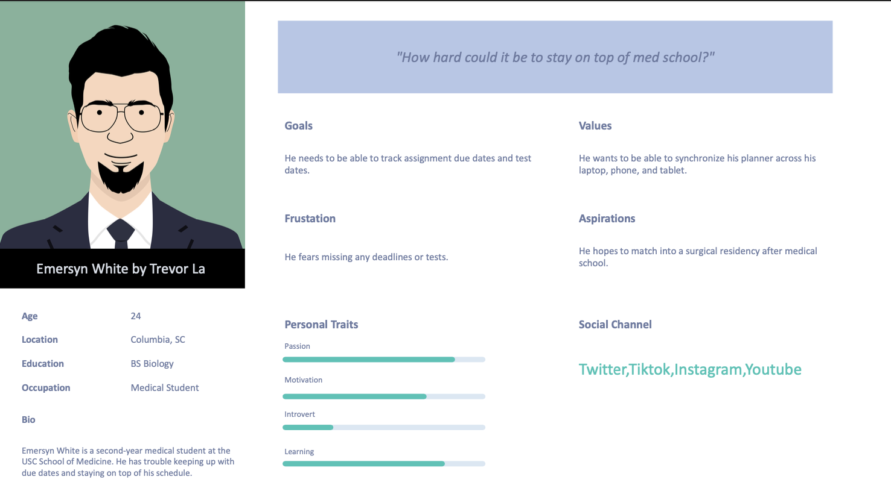
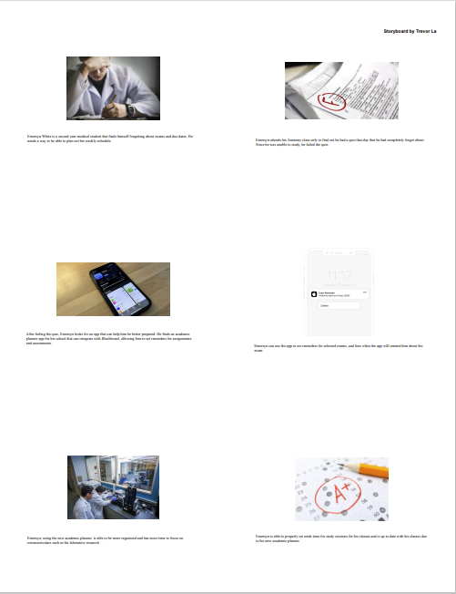
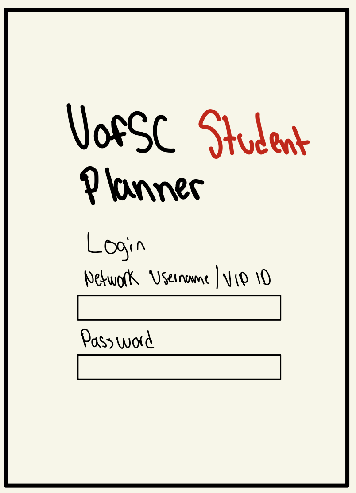
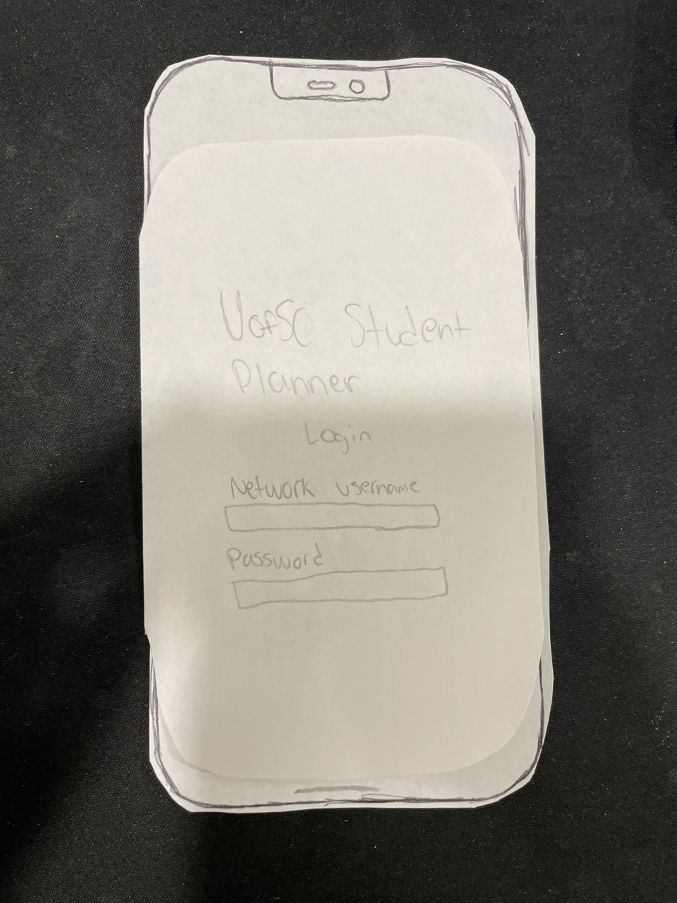
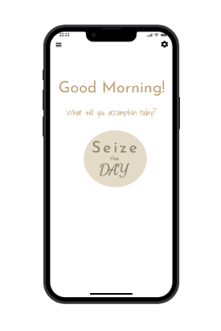

Problem Statement: Academic Planner

College students have a hard time keeping track of deadlines and important dates for multiple classes.
Affinity Diagram: Academic Planner

My group and I created a affinity diagram to map out what we wanted our academic planner to look like.
Persona: 5 Personas for Academic Planner
A persona of a typical user of an academic planner.
Storyboard: 5 Storyboards for Academic Planner
Fictional story of a potential academic planner user.
Sketches
A sketch of how the academic planner may look.
Paper Prototype
A paper prototype of how the academic planner could work.
Paper Prototype
A high fidelity prototype of how the academic planner could function as a iPhone application.